청소년상담사-2급(1교시) (2017-09-16 기출문제)
1과목: 청소년 상담의 이론과 실제
1. 청소년 내담자의 특성으로 옳은 것을 모두 고른 것은?
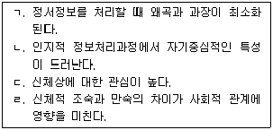
- ㄱ, ㄷ
- ㄴ, ㄹ
- ㄱ, ㄷ, ㄹ
- ㄴ, ㄷ, ㄹ
- ㄱ, ㄴ, ㄷ, ㄹ
(정답률: 91%)

2. 합리적정서행동상담(REBT)의 관점에서 볼 때 정서적 문제의 원인으로 옳은 것은?
- 무의미
- 선행사건
- 익명성
- 당위적 사고
- 미해결과제
(정답률: 64%)
3. 청소년 상담의 특성으로 옳지 않은 것은?
- 치료적 접근이 예방적 접근보다 더 유용하다.
- 청소년 내담자는 부모나 교사에 의해 의뢰되는 경우가 많다.
- 청소년은 환경의 영향을 많이 받는 시기이므로 상담자는 사회 변화에 민감해야 한다.
- 가족과 교사의 협력이 필요하다.
- 언어적 의사소통 이외에도 다양한 상담접근이 효과적이다.
(정답률: 85%)
4. 여성주의 상담에 관한 설명으로 옳지 않은 것은?
- 내담자에게 내면화된 성역할 메시지를 확인한다.
- 상담자와 내담자 관계를 평등한 관계로 유지한다.
- 내담자가 환경변화를 위한 사회적 행동에 참여하도록 돕는다.
- 재구성하기(reframing)를 통해 문제의 원인을 사회적 차원으로 인식하게 한다.
- 내담자가 사회적 규범을 수용하도록 함으로써 사회 적응력을 증진시킨다.
(정답률: 알수없음)
5. 윤리적 갈등상황에서 상담자가 취할 수 있는 행동으로 옳은 것을 모두 고른 것은?
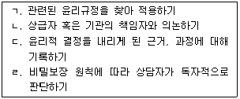
- ㄱ, ㄴ
- ㄱ, ㄷ
- ㄴ, ㄹ
- ㄱ, ㄴ, ㄷ
- ㄱ, ㄴ, ㄷ, ㄹ
(정답률: 56%)
6. 다음 사례에 적용된 상담이론의 개입방법으로 옳지 않은 것은?
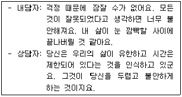
- 삶에 대한 가치관을 점검하기
- 현재 가치체계의 출처를 탐색하기
- 선택의 자유와 책임 인식하기
- 불안의 원인 인식하기
- 생활양식 분석하기
(정답률: 알수없음)
7. 내담자 A는 시험기간만 돌아오면 유난히 불안해하며 시험 준비에 집중하지 못한다. 상담자는 내담자가 시험기간 중 어떻게 시험을 준비해야하는지 모르는데 원인이 있다고 판단 하였다. 다음에서 상담자가 사용한 기법은?
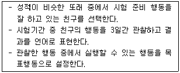
- 긴장이완훈련
- 모델링
- 조형(shaping)
- 불안위계
- 자기관찰학습
(정답률: 92%)
8. 다음 사례에서 A가 경험하는 분노를 설명하는 교류분석의 개념은?
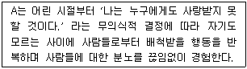
- 혼합(contamination)
- 라켓(racket)
- 에고그램(egogram)
- 상보교류(complementary transaction)
- 스트로크(stroke)
(정답률: 알수없음)
9. 다음 사례에 적용된 게슈탈트 상담의 기법은?
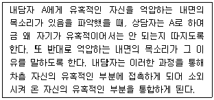
- 현재화기법
- 논박기법
- 분리 –개별화
- 창조적 투사
- 상전과 하인
(정답률: 74%)
10. 인간중심상담의 치료적 접근으로 옳은 것은?
- 행동변화계획
- 성장촉진적 관계
- 꿈의 분석
- 가족력 분석
- 비합리적 신념의 탐색
(정답률: 96%)
11. 다른 사람들이 나의 행동을 '우스꽝스럽다' 고 생각할까봐 하지 못하는 그 행동을 많은 사람들 앞에서 해보도록 권하는 상담기법은?
- 판단중지(bracketing)
- 체계적 직면(systematic confrontation)
- 인지적 과제(cognitive homework)
- 수치심 깨뜨리기(shame - attacking exercises)
- 체계적 둔감화(systematic desensitization)
(정답률: 93%)
12. 단기상담에 관한 설명으로 옳지 않은 것은?
- 대인관계 능력을 지닌 내담자에게 적합하다.
- 비교적 경미한 문제를 지닌 내담자에게 적합하다.
- 정신 기능이 능률적인 내담자에게 적합하다.
- 상담자의 적극적인 역할을 강조한다.
- 성격의 변화를 도모할 때 주로 사용된다.
(정답률: 알수없음)
13. 상담의 구조화에 관한 설명으로 옳지 않은 것은?
- 상담 초기를 비롯하여 모든 단계에서 이루어진다.
- 상담자와 내담자의 공감적 탐색과 합의 과정을 통해 이루어진다.
- 상담이 효율적으로 진행되기 위해서는 많이 이루어질수록 좋다.
- 내담자가 상담이나 상담자에 대한 비현실적 기대를 갖는 경우 더욱 필요하다.
- 내담자 정보에 대한 상담자의 비밀보장은 예외가 있음을 확실히 한다.
(정답률: 95%)
14. 효과적인 상담 목표의 특성으로 옳은 것은?
- 내담자의 증상과 문제들을 모두 상담 목표로 설정한다.
- 측정 가능한 행동 목표를 설정한다.
- 전문적 관점에서 상담자가 내담자와의 합의 없이 목표를 설정한다.
- 내담자가 달성하기 어려운 목표를 설정한다.
- 상담 초기 설정한 목표는 수정되지 않고 지속적으로 유지된다.
(정답률: 96%)
15. 상담 종결의 조건으로 옳지 않은 것은?
- 상담자와 내담자의 관계가 친밀해졌다고 느낄 때
- 내담자가 호소문제를 더 이상 경험하지 않을 때
- 현재의 생활에 잘 적응하고 있는 것으로 판단될 때
- 내담자가 호소문제를 경험하더라도 감내할 수 있을 정도로 호전되었다고 느낄 때
- 내담자가 스스로 해결했던 문제 상황에 대해 더 많이 이야기하게 될 때
(정답률: 알수없음)
16. 아들러(A. Adler) 개인심리학의 인간관에 관한 설명으로 옳은 것은?
- 인간은 성적 충동에 의해 일차적으로 동기화되는 존재이다.
- 인간의 행동은 삶에 대한 허구적인(fictional) 중심 목표에 의해 인도된다.
- 인간은 미래를 향한 목적론적인(teleological) 존재로서, 과거에 의해 영향 받지 않는다.
- 열등감(inferiority)은 신경증의 원천으로, 잠재 능력을 저하시키는 부정적 요인이다.
- 자신의 행복과 복지를 추구함으로써 심리적 건강을 회복하게 된다.
(정답률: 27%)
17. 프로이드(S. Freud)의 정신분석상담에서 나타나는 치료적 관계의 특징으로 옳지 않은 것은?
- 내담자가 과거의 중요한 타인에게 가졌던 감정과 태도를 상담자에게 투영하는 전이가 나타난다.
- 상담자는 내담자에게 최대한 중립적 태도를 유지한다.
- 역전이는 내담자를 이해하는데 중요한 자료가 되므로 내담자에게 표현하여 다룬다.
- 전이는 내담자 무의식의 반영이므로 상담 과정에서 해석을 통해 분석되어야 한다.
- 상담자와 내담자의 치료적 동맹(therapeutic alliance)이 중요하다.
(정답률: 73%)
18. 상담자와 내담자의 대화에서 나타나는 내담자의 인지오류는?
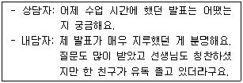
- 파국화
- 의미확대 및 축소
- 이분법적 사고
- 선택적 추상화
- 임의적 추론
(정답률: 54%)
19. 정상적인 성격발달이 특정 발달 단계의 성공적인 문제 해결과 관련 있다고 보는 상담 접근은?
- 이야기치료
- 가족체계상담
- 정신분석상담
- 해결중심상담
- 인간중심상담
(정답률: 64%)
20. 상담자가 사용한 상담 기술에 관한 설명으로 옳은 것은?
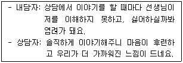
- 상담 관계 안에서 상담자가 내담자에 대해 어떻게 느끼는지 드러내는 것이다.
- 상담자의 인생 경험과 관련한 개인적인 정보를 제공한다.
- 대인관계에 대한 솔직한 감정을 표현하기 힘든 문화권의 내담자와 상담관계를 형성할 때 적극적으로 사용된다.
- 상담 관계에서 신뢰감 형성을 위해 상담 초기에 사용된다.
- 과거 상담 회기 중 일어난 경험과 관련이 있다.
(정답률: 67%)
21. 상담의 초기 단계에서 이루어져야 할 작업을 모두 고른 것은?
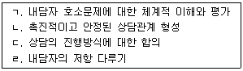
- ㄱ, ㄴ
- ㄱ, ㄷ
- ㄱ, ㄴ, ㄷ
- ㄴ, ㄷ, ㄹ
- ㄱ, ㄴ, ㄷ, ㄹ
(정답률: 78%)
22. 글래서(W. Glasser)의 선택이론이 제안하는 기본 욕구에 관한 설명으로 옳지 않은 것은?
- 기본 욕구 간에는 위계가 존재한다.
- 인간은 다섯 가지 기본 욕구를 가지고 태어난다.
- 새로운 것을 배우고자 하는 속성은 즐거움의 욕구에 속한다.
- 생존 욕구를 제외한 다른 욕구들은 모두 심리적 욕구이다.
- 개인 내 욕구 충족뿐만 아니라 개인 간 욕구 충족 사이에서도 갈등이 발생한다.
(정답률: 37%)
23. 현실치료에서 우볼딩(R. Wubbolding)이 제안하는 행동계획의 특징으로 옳은 것은?
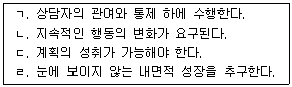
- ㄱ, ㄴ
- ㄴ, ㄷ
- ㄷ, ㄹ
- ㄱ, ㄴ, ㄷ
- ㄱ, ㄴ, ㄷ, ㄹ
(정답률: 20%)
24. 내담자 진술에 관한 상담자의 감정반영이 아닌 것은?
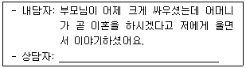
- 당신이 이야기하는 것을 들으니 슬픔이 느껴집니다.
- 부모님이 걱정되시겠어요.
- 어머니에 대해 화가 나는 것은 아닌지 궁금합니다.
- 부모님이 곧 이혼하실 수도 있다고 믿고 있군요.
- 마치 당신이 깊은 수렁에 빠진 것 같군요.
(정답률: 알수없음)
25. 청소년상담사 윤리강령에 나타난 상담자 행동에 관한 설명으로 옳지 않은 것은?
- 청소년 내담자와 보호자가 상담기록의 삭제를 요청할 때 이를 삭제해서는 안된다.
- 청소년 내담자가 기록에 대한 열람을 요구할 경우 오해의 소지가 없고 상담자와 내담자에게 해가 없다고 판단되면 이에 응한다.
- 청소년 내담자의 성장과 복지에 필요하다고 판단된 경우에 한해 부모에게 정확하고 종합적인 정보를 알릴 수 있다.
- 법적, 도덕적 한계를 벗어난 다중관계를 맺지 않는다.
- 심리검사의 잠재적 영향력, 결과에 대해 청소년 내담자가 이해할 수 있도록 설명한다.
(정답률: 알수없음)
2과목: 상담연구방법론의 기초
26. 비확률적 표집 방법에 해당하는 것은?
- 할당(quota) 표집
- 군집(cluster) 표집
- 층화(stratified) 표집
- 체계적(systematic) 표집
- 단순무작위(simple - random) 표집
(정답률: 70%)
27. 근거이론에 관한 설명으로 옳은 것은?
- 연역적으로 이론을 구성하는 연구방법이다.
- 개방코딩 단계에서는 패러다임 모형을 구축한다.
- 축코딩 단계에서는 하위범주들을 범주와 연결시킨다.
- 개방코딩, 선택코딩, 축코딩의 순서로 자료를 분석한다.
- 선택코딩 단계에서는 범주를 발견하고 이름을 붙이는 작업을 한다.
(정답률: 40%)
28. 일반적인 주장이나 기존 이론에 근거하여 새로운 가설을 세우고 이를 실증적으로 검증하는 방법은?
- 귀납법
- 연역법
- 사례연구법
- 내용분석법
- 문헌분석법
(정답률: 60%)
29. 다음 내용에서 ( ㄱ )과 ( ㄴ )이 옳게 연결된 것은?
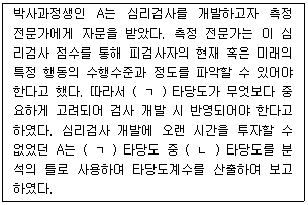
- ㄱ: 준거관련 ㄴ: 공인
- ㄱ: 공인 ㄴ: 행동
- ㄱ: 행동 ㄴ: 내용
- ㄱ: 내용 ㄴ: 구인
- ㄱ: 구인 ㄴ: 준거관련
(정답률: 59%)
30. 상담 접근방법과 상담 회기 수에 따라 우울증 내담자 대상 집단상담 효과의 차이를 알아보기 위해서 연구자는 상담접근방법을 인지행동과 정신분석 접근법으로 구분하였다. 그리고 각 접근법마다 집단상담 회기 수를 5회기, 10회기, 15회기로 구분하고 각 실험조건하에 연구 참여자들을 무선할당하여 집단상담 효과의 차이를 비교하였다. 이 연구자가 사용한 연구설계는?
- 무선화 구획설계
- 무선화 반복설계
- 완전무선화 요인설계
- 무선화 분할구획 요인설계
- 통제집단 사전사후검사설계
(정답률: 10%)
31. 연구자는 측정도구의 내적일관성(internal consistency) 신뢰도에 영향을 미치는 요인을 미리 파악한 후 그 요인을 고려하여 연구에 필요한 측정도구를 선정하고자 한다. 다음 중 연구자가 고려해야 할 요인이 아닌 것은?
- 문항의 수
- 검사의 시간
- 집단의 동질성
- 문항의 변별도
- 문항의 자유도
(정답률: 59%)
32. 실험연구의 특징으로 옳은 것은?
- 인과관계 파악이 용이하다.
- 가외변수의 통제가 어렵다.
- 종속변수의 조작이 용이하다.
- 현장조사연구에 비해 연구결과의 일반화가 용이하다.
- 변수의 조작적 정의를 정확하게 내리기 쉽지 않다.
(정답률: 59%)
33. 다음 중 양적연구 패러다임에 해당하는 내용은?
- 연구결과의 제한된 일반화
- 연구자와 연구대상이 서로 밀접한 관계 유지
- 특정 현상에 대한 해석이나 의미의 차이 이해
- 결과에 대해 시간적으로 선행하거나 동시에 일어나는 원인이 실재한다는 가정
- 객관적 실재로 일반화시킬 수 있는 인간의 속성은 없다는 가정
(정답률: 알수없음)
34. 미국심리학회(APA) 최신 양식에 따라 학술지(journal)를 연구논문의 참고문헌목록에 기재할 때 반드시 포함되어야 할 내용을 모두 고른 것은?
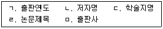
- ㄱ, ㄷ, ㅁ
- ㄴ, ㄷ, ㄹ
- ㄱ, ㄴ, ㄷ, ㄹ
- ㄴ, ㄷ, ㄹ, ㅁ
- ㄱ, ㄴ, ㄷ, ㄹ, ㅁ
(정답률: 54%)
35. 500점 만점의 적성검사에서 평균이 300이고 표준편차가 50일 때 A가 350점을 얻었다면 A의 T점수는? (단, T점수는 평균이 50이고 표준편차는 10으로 하는 표준점수임)
- 45
- 50
- 55
- 60
- 65
(정답률: 67%)
36. 구조방정식모형의 장점이 아닌 것은?
- 측정의 오차를 통제할 수 있다.
- 적합도 지수들을 사용하여 이론적 모형에 대한 통계적 평가가 가능하다.
- 여러 개의 독립변수, 매개변수, 종속변수간의 관계를 동시에 분석할 수 있다.
- 잠재변수를 사용하므로 측정변수로만 산출된 값에 비해 비교적 정확한 추정치를 얻을 수 있다.
- 외생잠재변수와 내생잠재변수간의 관계를 분석하므로 측정에서 발생하는 설명오차를 통제할 수 있다.
(정답률: 13%)
37. 다음 중 표절이 아닌 것은?
- 타인의 아이디어를 출처를 밝히지 않고 마치 자신의 것처럼 활용하는 경우
- 타인의 저작물을 인용부호(“ ”)를 사용하여 완벽하게 똑같이 직접 인용하고 출처를 밝히는 경우
- 타인의 저작물을 여러 곳에 많이 인용하면서도 그 중 일부에만 출처를 표시한 경우
- 연구자 자신이 직접 작성한 이전 저작물을 출처 표시 없이 후속연구에 인용하는 경우
- 국내의 다른 저자에 의해 이미 1차 인용된 내용을 활용하면서 재인용 표시를 하지 않고 원전만을 인용한 것으로 표시한 경우
(정답률: 79%)
38. 판별분석을 위한 조건과 가정에 관한 설명으로 옳은 것을 모두 고른 것은?
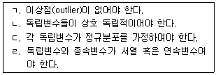
- ㄱ, ㄴ
- ㄴ, ㄷ
- ㄱ, ㄴ, ㄷ
- ㄱ, ㄷ, ㄹ
- ㄴ, ㄷ, ㄹ
(정답률: 30%)
39. 상담연구 수행 시 고지된 동의(informed consent)에 반드시 포함해야 하는 사항을 모두 고른 것은?
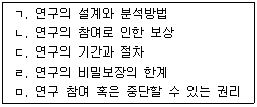
- ㄱ, ㄴ, ㄷ
- ㄴ, ㄷ, ㄹ
- ㄱ, ㄴ, ㄷ, ㄹ
- ㄴ, ㄷ, ㄹ, ㅁ
- ㄱ, ㄴ, ㄷ, ㄹ, ㅁ
(정답률: 37%)
40. 다음의 적합도 지수 중 표본크기에 가장 민감한 지수는?
- Tucker-Lewis Index
- Normed Fit Index
- Non-Normed Fit Index
- Comparative Fit Index
- Root Mean Square Error of Approximation
(정답률: 30%)
41. 연구논문 작성에 관한 설명으로 옳은 것은?
- 서론에는 가설검증 결과를 기술한다.
- 연구문제에는 표집절차에 대해 설명한다.
- 서론에서 선행연구를 인용할 때는 출처를 생략한다.
- 연구방법에는 측정도구의 신뢰도에 대해 기술한다.
- 연구결과에는 연구의 함의 및 제한점을 기술한다.
(정답률: 70%)
42. 평균의 표준오차(standard error of the mean)에 관한 설명으로 옳은 것은?
- 모집단을 대표하는 표본의 분포
- 표본평균과 모집단 평균의 차이
- 오차점수 평균들의 표준편차
- 표본분포 평균들의 표준편차
- 각 데이터와 평균과의 차이
(정답률: 28%)
43. 부모의 양육태도가 자녀의 정서조절능력 발달에 미치는 영향을 알아보기 위해 초등학교 5학년 100명, 중학교 1학년 100명을 무선표집하여 연간 두 차례 추적조사를 하였다. 이에 관한 설명으로 옳은 것을 모두 고른 것은?
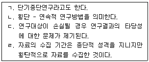
- ㄱ, ㄴ
- ㄱ, ㄷ
- ㄴ, ㄷ
- ㄷ, ㄹ
- ㄱ, ㄴ, ㄹ
(정답률: 30%)
44. 표본의 크기에 관한 설명으로 옳지 않은 것은?
- 모집단이 동질적일수록 표본 크기는 작아도 된다.
- 동일한 조건에서 표본의 크기가 클수록 통계적 검증력은 증가한다.
- 사례수가 작으면 표준오차가 커지므로 작은 크기의 효과를 탐지할 수 있다.
- 측정도구의 신뢰도가 낮을 경우 대규모 표본을 이용하는 것이 효과적이다.
- 중도탈락률이 높을 것으로 예상되는 경우 대규모 표본을 이용하는 것이 효과적이다.
(정답률: 34%)
45. A는 상담 작업동맹을 연구하기 위해 상담자와 내담자가 각각 작성하는 자기보고식 척도를 제작하였다. 이 연구가 타당하게 진행되기 위해 고려할 점으로 옳은 것은?
- 내용타당도를 알아보기 위해 요인분석을 실시한다.
- 예측타당도를 알아보기 위해 상담 작업동맹의 하위요인을 규명한다.
- 내적일관성 신뢰도를 알아보기 위해 상담자와 내담자의 작업동맹 간 상관계수를 산출한다.
- 재검사 신뢰도를 알아보기 위해 Cronbach's alpha 계수를 산출한다.
- 수렴 및 변별타당도를 알아보기 위해 중다특성-중다방법을 사용한다.
(정답률: 40%)
46. A는 부모교육 프로그램의 효과성을 알아보기 위해 최근 10년간 국내에서 발표된 부모교육프로그램 효과성 논문 100편을 분석하려고 한다. 연구 진행 시 고려할 점으로 옳은 것은?
- 출판편향(publication bias)은 1종 오류를 증가시킨다.
- 피험자 한 명당 1의 자유도를 부여한다.
- 연구설계가 빈약한 논문은 분석에 포함시키지 않는다.
- 책상서랍(file drawer)의 문제를 해결하기 위해 동질성 통계량을 확인한다.
- 효과크기가 동질적이라면 무선효과(random effect) 모형을 적용한다.
(정답률: 34%)
47. 다음 결과를 논문에 제시할 때 옳은 것은?
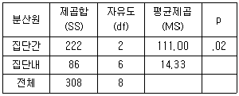
- 두 집단 간 유의한 차이가 없다(F(2, 8) = 7.75, p = .02).
- 세 집단 간 유의한 차이가 없다(F(2, 6) = 14.33, p = .02).
- 두 집단 간 유의한 차이가 있다(F(2, 6) = 7.75, p ＜ .⑤).
- 세 집단 간 유의한 차이가 있다(F(2, 8) = 14.33, p ＜ .⑤).
- 세 집단 간 유의한 차이가 있다(F(2, 6) = 7.75, p ＜ .⑤).
(정답률: 24%)
48. 다음은 김교사와 이교사가 학생 30명의 수행평가 결과를 각각 상, 중, 하로 평정한 결과이다. 이에 관한 설명으로 옳은 것은?
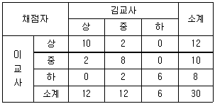
- 상 - 상 셀의 기대빈도는 4.8이다.
- 중 - 중 셀의 기대빈도는 4.2이다.
- 하 - 하 셀의 기대빈도는 3이다.
- 채점자간 일치율은 0.98이다.
- Kappa계수는 약 0.347이다.
(정답률: 알수없음)
49. 다음 중 옳은 것을 모두 고른 것은?
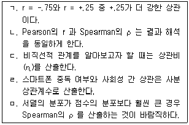
- ㄱ, ㄴ
- ㄴ, ㄷ
- ㄱ, ㄷ, ㄹ
- ㄴ, ㄹ, ㅁ
- ㄷ, ㄹ, ㅁ
(정답률: 알수없음)
50. A는 자신이 운영하는 집단상담 프로그램이 청소년의 인터넷 중독에 미치는 영향에 대해 알아보고자 실험집단과 통제집단을 모집하였다. 그런데 선행연구를 통해 부모자녀 관계가 인터넷 중독에 영향을 미친다는 것을 알게 되었다. 이 연구를 진행할 때 고려할 점으로 옳지 않은 것은?
- 통제집단 사전사후검사설계를 사용한다.
- 통계방법은 공분산 분석(ANCOVA)을 사용한다.
- 가변수(dummy variable)는 2개를 생성한다.
- 부모자녀 관계의 영향력을 통제함으로써 내적 타당도를 높일 수 있다.
- 연구참여자를 실험집단과 통제집단에 무선적으로 할당한다.
(정답률: 64%)
3과목: 심리측정 평가의 활용
51. 투사적 심리검사에 관한 설명으로 옳지 않은 것은?
- 검사자극이 불분명하고 모호하다.
- 객관적 심리검사에 비해 신뢰도와 타당도가 낮다.
- 객관적 심리검사에 비해 수검자가 방어하기 어렵다.
- 객관적 심리검사에 비해 상황 변인의 영향을 많이 받는다.
- TAT, HTP, SCT, MBTI, MMPI 등이 있다.
(정답률: 53%)
52. 심리검사의 개발 순서를 맞게 나열한 것은?
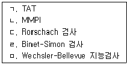
- ㄱ - ㄴ - ㄷ - ㄹ – ㅁ
- ㄹ - ㄱ - ㄷ - ㅁ – ㄴ
- ㄹ - ㄴ - ㄱ - ㄷ - ㅁ
- ㄹ - ㄷ - ㄱ - ㅁ – ㄴ
- ㅁ - ㄷ - ㄴ - ㄱ - ㄹ
(정답률: 42%)
53. 행동평가법에 관한 설명으로 옳지 않은 것은?
- 간격 기록에서는 일정한 간격을 두고 일어나는 행동을 기록한다.
- 행동관찰은 관찰자 기대의 영향을 받는다.
- 처치효과를 평가하는 데 유용하다.
- 관찰자 간의 평정 차이가 클수록 신뢰도가 높아진다.
- 사건 기록에서는 행동의 빈도와 강도 등을 기록한다.
(정답률: 64%)
54. 11세 초등학생 A는 ADHD 진단을 받고 약물 치료 중이다. K-WISC-IV를 실시한 결과, 언어이해지표에서 115점, 처리속도지표에서 85점이 산출되었다. 각 지표점수에 해당하는 T점수는?
- 55, 45
- 60, 40
- 60, 50
- 65, 55
- 70, 60
(정답률: 알수없음)
55. 정신상태검사(mental status examination)에 관한 설명으로 옳지 않은 것을 모두 고른 것은?
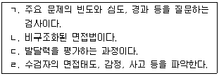
- ㄱ, ㄴ
- ㄷ, ㄹ
- ㄱ, ㄴ, ㄷ
- ㄴ, ㄷ, ㄹ
- ㄱ, ㄴ, ㄷ, ㄹ
(정답률: 알수없음)
56. 심리검사의 신뢰도와 타당도에 관한 설명으로 옳은 것은?
- 문항수가 적을수록 내적일관성 신뢰도는 증가한다.
- 예측타당도는 검사가 구성개념을 대표하는 정도를 말한다.
- 포괄적인 속성을 측정하는 검사일수록 내용타당도를 확보하기 쉽다.
- 일시적인 스트레스에 영향을 많이 받을수록 검사-재검사 신뢰도는 높게 산출된다.
- 검사점수와 준거변수의 상관이 높을 경우 공인타당도(concurrent validity)가 높다.
(정답률: 46%)
57. 다음 사례 중 심리검사를 적절하게 사용하지 않은 것은?
- 12세 남학생의 가족 구성원 간의 정서적 관계를 파악하기 위하여 KFD를 실시하였다.
- 11세 여학생의 A유형 행동을 파악하기 위하여 MMPI-A를 실시하였다.
- 8세 남학생의 어휘력을 파악하기 위하여 K-WISC-Ⅳ를 실시하였다.
- 16세 여학생의 내향성을 파악하기 위하여 MBTI를 실시하였다.
- 17세 남학생의 성취동기를 파악하기 위하여 TAT를 실시하였다.
(정답률: 알수없음)
58. 심리검사에 관한 설명으로 옳은 것은?
- 전집의 행동을 측정한다.
- 개인 간 비교를 할 수 없다.
- 심리검사를 통해 내리는 결론은 확정적인 것이 아니라 잠정적인 것이다.
- 심리적 속성을 공식에 따라 수량화한다.
- 면접과 행동관찰에서 얻은 정보를 통합한 결과이다.
(정답률: 45%)
59. 심리검사를 개발할 때 문항선별에 관한 설명으로 옳은 것은?
- 변량이 크다는 것은 해당 문항에 대한 수검자들의 반응이 거의 동일함을 의미한다.
- 문항선별의 목적은 최대 개수의 문항으로 일정 수준 이상의 타당도와 신뢰도를 얻기 위함이다.
- 문항-총점 간 상관계수가 낮은 문항부터 제외한다.
- 크론바흐 알파계수(α)가 높은 문항부터 제외한다.
- 응답 평균이 극단에 위치하는 문항들은 일반적으로 큰 변량을 가진다.
(정답률: 77%)
60. 심리평가를 위한 면접에 관한 설명으로 옳지 않은 것은?
- 구조적 면접은 비구조적 면접에 비해 면접자 간 일치도가 낮다.
- 구조적 면접 자료는 비구조적 면접 자료에 비해 수량화가 쉽다.
- 구조적 면접은 수검자의 상황에 따라 융통성을 발휘하기 어렵다.
- 면접의 형식을 선정할 때는 면접의 목적을 고려한다.
- 구조적 면접은 면접의 내용이 정해져 있다.
(정답률: 79%)
61. 오답률에 기초한 문항난이도에 관한 설명으로 옳은 것은?
- 해당 문항이 응답자들을 구분해주는 정도를 말한다.
- 문항난이도 지수가 0에 근접할수록 어려운 문항이다.
- 문항난이도 지수가 1에 근접할수록 정적 편포가 발생한다.
- 문항난이도 지수가 작아질수록 문항변별력은 커진다.
- 문항 원점수를 표준점수로 바꾸어서 산출한다.
(정답률: 9%)
62. 심리검사 사용에 관한 고려사항으로 옳은 것을 모두 고른 것은?
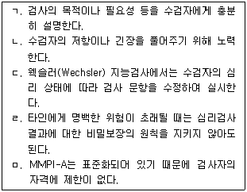
- ㄱ, ㄴ, ㄷ
- ㄱ, ㄴ, ㄹ
- ㄱ, ㄷ, ㅁ
- ㄱ, ㄴ, ㄷ, ㄹ
- ㄴ, ㄷ, ㄹ, ㅁ
(정답률: 82%)
63. 허트(M. Hutt)의 BGT 평가항목 중 형태왜곡에 속하지 않는 것은?
- 도형 A의 크기
- 단순화(simplification)
- 중첩곤란(overlapping difficulty)
- 단편화(fragmentation)
- 보속성(perseveration)
(정답률: 54%)
64. K-WAIS-IV에 관한 설명으로 옳은 것은?
- 총 14개의 소검사로 구성되어 있다.
- 빠진 곳 찾기는 작업기억지표에 해당하는 보충 소검사이다.
- 순서화는 사회적 이해력을 파악하기 위한 핵심 소검사이다.
- 이해는 언어이해지표의 보충 소검사이다.
- 퍼즐은 K-WAIS-IV에서 제외된 소검사이다.
(정답률: 75%)
65. 클로닌저(C. Cloninger)가 개발한 기질 및 성격검사(TCI)의 성격 척도를 모두 포함한 것은?
- 자극추구, 인내력
- 자극추구, 인내력, 자율성
- 위험회피, 자율성, 자기초월
- 자율성, 연대감, 사회적 민감성
- 자율성, 연대감, 자기초월
(정답률: 70%)
66. 로샤(Rorschach) 검사의 자살 가능성 지표(S-CON)에 해당하지 않는 것은?
- 3r+(2)/R ＜ .31 or ＞ .44
- MOR ＞ 3
- FV+VF+V+FD ＞ 2
- X-% ＞ .29
- CF+C ＞ FC
(정답률: 42%)
67. 강박장애로 치료 중인 고등학교 3학년 B에게 K-WAIS-IV를 실시한 결과 다른 소검사보다 상식, 어휘문제의 점수가 유의하게 높았다. 이 검사 결과로 알 수 있는 B의 심리적 특성으로 옳은 것은?
- 높은 공간지각력
- 높은 주지화 경향
- 빠른 시각적 정보처리 속도
- 주의력 저하
- 현실검증력 손상
(정답률: 53%)
68. 웩슬러(Wechsler) 지능검사에서 병전 지능을 추정하기 위해 사용되는 소검사를 모두 고른 것은?
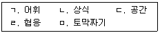
- ㄱ, ㄷ
- ㄱ, ㄴ, ㄹ
- ㄱ, ㄴ, ㅁ
- ㄷ, ㄹ, ㅁ
- ㄱ, ㄴ, ㄷ, ㄹ, ㅁ
(정답률: 70%)
69. 고등학교 3학년 C는 학급 친구들로부터 따돌림을 받은 후 불안감과 고통을 호소하였다. C에게 PAI를 사용할 때 고려할 사항으로 옳지 않은 것은?
- 누락된 응답이 17개 이상인지 확인한다.
- 4개의 타당도 척도에서 반응일관성과 부주의, 무관심, 왜곡 등의 문제가 있는지 살펴본다.
- 결정문항에서 '그렇다'는 반응이 3개 이상일 때부터 즉각적인 개입이 필요하다.
- 임상척도에서 T점수 70 이상이면 정상집단으로부터 이탈되었다고 해석할 수 있다.
- 수검자의 검사 프로파일을 24개 진단군의 평균 프로파일과 비교할 수 있다.
(정답률: 47%)
70. 주제통각검사(TAT)에서 도판의 왼쪽에 엽총이 보이고 배경에 수술 장면이 있는 도판 8BM의 일반적인 주제로 옳지 않은 것은?
- 공격성
- 야망
- 외디푸스적 갈등
- 모녀간 적대감
- 억압
(정답률: 50%)
71. MMPI-2의 타당도 척도 중 수검자가 자신의 증상을 부정적으로 과장하거나 왜곡할 때 상승하는 척도는?
- F, F(P)
- VRIN, F
- VRIN, F(B)
- L, K, S
- L, K, FBS
(정답률: 40%)
72. 로샤(Rorschach) 검사에서 결정인에 관한 해석으로 옳은 것은?
- Y, YF, FY: 통제할 수 없는 불안감
- T, TF, FT: 사고의 효율성
- C, CF, FC, Cn: 지각적 왜곡
- rF, Fr: 방어적 태도
- C', C'F, FC': 조직화 경향
(정답률: 60%)
73. MMPI-A에만 있는 내용척도와 그에 관한 설명으로 옳은 것은?
- 낮은 자존감척도: 타인의 평가, 의심과 불신 등으로 인한 불안감과 자신감 저하 정도
- 가정문제척도: 가족 내 불화, 분노, 심각한 불일치 등 가족 구성원의 갈등 정도
- 소외척도: 다른 사람들로부터 정당한 대우를 받지 못하고 이해받지 못하며 이용당한다고 느끼는 정도
- 학교문제척도: 학교에서 또래들을 상대로 일어나는 절도, 거짓말, 무례한 행동, 반항적 행동 정도
- 부정적 치료지표척도: 좌절과 고통에 대한 내성, 무망감 정도
(정답률: 알수없음)
74. 학부모에게 삭스(J. Sacks)의 문장완성검사(SSCT)를 사용하였을 때 평점기록지에 포함되지 않는 태도는?
- 친구나 친지에 대한 태도
- 권위자에 대한 태도
- 두려움에 대한 태도
- 죄책감에 대한 태도
- 문제의 원인에 대한 태도
(정답률: 79%)
75. 로샤(Rorschach) 검사에서 수검자가 반점들에 대해 “닭 머리를 한 여자”라고 반응했을 때 채점 기호로 옳은 것은?
- DV2
- Afr
- COP
- INCOM2
- BIZ
(정답률: 67%)
4과목: 이상심리
76. 다음 중 상동증적 운동장애에 관한 설명으로 옳지 않은 것은?
- 외견 상 특별한 목적이 없어 보이는 반복적인 운동행동을 한다.
- 반복적인 운동행동이 사회적 또는 학업적 활동을 방해한다.
- 증상의 심각도가 경도인 경우 감각자극이나 주의전환에 의해 증상이 쉽게 억제된다.
- 운동행동을 억제하기 위해 보호 장비를 찾는 행동을 하기도 한다.
- 자폐 스펙트럼 장애를 충족하는 경우 자해행동이 있으면 상동증적 운동장애가 진단될 수 없다.
(정답률: 90%)
77. 정신장애를 설명하기 위한 취약성-스트레스 모형에 관한 설명으로 옳은 것은?
- 취약성 요인에는 사별, 이직이 있다.
- 스트레스 요인에는 개인의 성격 특성이 포함된다.
- 취약성과 스트레스는 각각 독립적으로 작용한다고 가정한다.
- 일란성 쌍생아의 정신장애 발병 일치율이 100%가 아닌 현상을 설명할 수 있다.
- 생물학적 요인의 영향이 없다고 가정한다.
(정답률: 84%)
78. 다음 사례에 나타난 장애의 진단기준으로 옳은 것은?
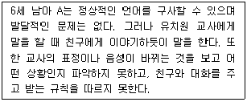
- 특정한 사회적 상황에서는 항상 말을 하지 않는다.
- 대화에서 언어의 함축적 또는 이중적 의미를 이해하기 어렵다.
- 극심한 공포와 고통이 갑작스럽게 발생한다.
- 특정한 장난감이나 놀이에만 관심을 보인다.
- 특정한 모음이나 자음은 길게 소리를 낸다.
(정답률: 91%)
79. 순환성장애에 관한 설명으로 옳지 않은 것은?
- 주요우울삽화와 경조증삽화가 없다.
- 증상이 없는 기간이 3개월 이상이어야 한다.
- 일반 인구에서 남녀 유병률은 비슷하다.
- 주요 발병 시기는 청소년기나 성인기 초기이다.
- 물질관련장애 또는 수면장애가 동반될 수 있다.
(정답률: 47%)
80. 급성 스트레스 장애의 각성 범주에 해당하지 않는 증상은?
- 과도한 경계심
- 수면 장해(sleep disturbance)
- 외상과 관련된 고통스러운 꿈
- 집중력의 문제
- 과도한 놀람 반응
(정답률: 55%)
81. 우울증과 관련된 인지적 오류에 관한 설명으로 옳지 않은 것은?
- 의미확대: 미래에 어떤 일이 일어날 것이라고 확신
- 독심술: 충분한 근거 없이 타인의 마음을 자의로 추측
- 파국적 사고: 부정적 측면만 보고 최악의 상태를 생각
- 개인화: 자신과 무관한 일이 자신과 관련 있다고 잘못 해석
- 잘못된 명명: 사람의 행위를 과장되거나 부적절하게 이름 붙임
(정답률: 100%)
82. 저장장애의 특징으로 옳은 것은?
- 집안의 물품을 버리지는 못하지만 그 물품을 기부는 한다.
- 물품을 수집하더라도 사회적, 직업적 또는 다른 중요 영역에서 고통이나 손상은 없다.
- 값비싼 물품만 보관한다.
- 수집한 물품 때문에 자신이나 타인에게 안전하지 못한 환경을 초래할 수 있다.
- 주기적으로 물품을 스스로 정리한다.
(정답률: 58%)
83. 간헐적 폭발장애에 관한 설명으로 옳지 않은 것은?
- 변연계 이상 등 신경생물학적 요인이 관여될 수 있다.
- 아동기 후반 또는 청소년기에 시작된다.
- 전형적으로 행동폭발을 유발하지 않는 자극에도 충동적으로 행동한다.
- 6개월 내 3개의 상해 위험이 있는 신체적 폭행을 보인다.
- 3개월 동안 평균 주 2회의 비난, 논쟁이나 언어적 다툼을 보인다.
(정답률: 73%)
84. 급식 및 섭식 장애에 관한 설명으로 옳지 않은 것은?
- 이식증을 제외한 단일 삽화에 대해 두 개 이상의 진단명을 적용할 수 없다.
- 되새김 장애(반추장애)에서는 적어도 1개월 동안 역류한 음식물을 반복해서 되씹거나 뱉는 증상이 나타난다.
- 신경성 식욕부진증에서는 음식, 체형 등에 관한 강박적인 집착이 나타날 수 있다.
- 폭식장애는 부적절한 보상행동이 나타나지 않는다.
- 신경성 폭식증은 대부분 저체중이 나타난다.
(정답률: 70%)
85. 다음 중 일주기 리듬 수면-각성 장애의 유형에 해당하지 않는 것을 모두 고른 것은?
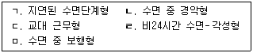
- ㄱ, ㄴ
- ㄱ, ㅁ
- ㄴ, ㄹ
- ㄴ, ㅁ
- ㄷ, ㄹ
(정답률: 77%)
86. 고등학교 2학년 B는 인터넷 게임도박을 하려고 몰래 부모의 지갑에서 돈을 꺼내 쓰다가 들켰다. 부모님이 꾸중하자 “심심해서 했고, 나는 심각하지 않다”라며 따지기도 했다. 최근 친구들에게 도박자금을 빌려 쓰다가 갚을 금액이 커지자 어머니가 갚아주었다. 이 사례에 해당하는 장애의 특징으로 옳은 것을 모두 고른 것은?
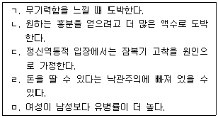
- ㄱ, ㄴ
- ㄱ, ㄷ
- ㄱ, ㄴ, ㄹ
- ㄴ, ㄷ, ㄹ
- ㄴ, ㄹ, ㅁ
(정답률: 100%)
87. 적대적 반항장애의 진단기준으로 옳지 않은 것은?
- 욱하고 화낸다.
- 자신의 잘못된 행동을 타인에게 전가한다.
- 권위자와 자주 논쟁을 벌인다.
- 앙심을 품는다.
- 타인의 물건을 훔친다.
(정답률: 91%)
88. 성별불쾌감에 관한 설명으로 옳지 않은 것은?
- 아동의 경우 남아는 여성 복장을 선호한다.
- 청소년의 경우 반대 성의 일차 또는 이차 성징을 갈망한다.
- 아동의 경우 자신의 성과 일치하는 놀이친구를 선호한다.
- 청소년의 경우 반대 성으로 대우받고 싶은 욕구가 있다.
- 아동의 경우 여아는 전형적인 여성적 장난감이나 활동을 거부한다.
(정답률: 93%)
89. 다음 사례에 적절한 진단명은?
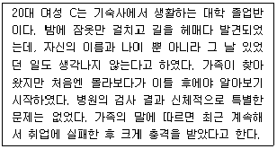
- 해리성 기억상실
- 주요 우울장애
- 해리성 정체성 장애
- 조현병
- 이인증
(정답률: 79%)
90. 조현양상장애(정신분열형장애)의 진단기준에 관한 설명으로 옳지 않은 것은?
- 증상의 기간은 1개월 이상 6개월 미만이어야 한다.
- 조현정동장애의 가능성이 배제되어야 한다.
- 물질의 생리적 효과로 인한 것이 아니어야 한다.
- 사회적 또는 직업적 기능의 손상이 있어야 한다.
- 증상의 심각도를 평가하여 구분할 수 있다.
(정답률: 알수없음)
91. 공황장애와 관련된 증상을 모두 고른 것은?
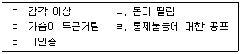
- ㄱ, ㄴ
- ㄱ, ㄷ, ㄹ
- ㄴ, ㄷ, ㄹ
- ㄱ, ㄴ, ㄷ, ㄹ
- ㄱ, ㄴ, ㄷ, ㄹ, ㅁ
(정답률: 55%)
92. 불안장애에 관한 설명으로 옳은 것은?
- 분리불안장애는 청소년의 경우 증상이 6개월 이상 지속되어야 한다.
- 집 밖에 혼자 있는 상황에서 불안을 느끼는 것은 광장공포증의 증상에 해당된다.
- 악몽을 자주 꾸는 것은 범불안장애의 증상에 해당된다.
- 물에 대한 두려움은 특정공포증의 상황형에 해당된다.
- 선택적 함구증은 학교생활의 첫 3개월 동안 진단되지 않는다.
(정답률: 30%)
93. 조현병에 관한 설명으로 옳은 것은?
- 망상, 환각, 와해된 언어 중 1개 증상이 반드시 포함되어야 한다.
- 기괴한(bizarre) 망상이 나타나면 다른 증상이 없어도 진단될 수 있다.
- 양성 증상은 음성 증상보다 더 만성적으로 나타난다.
- 2개 이상의 영역에서 기능이 저하되어야 진단될 수 있다.
- 일반적으로 발병 연령의 성별 차이는 나타나지 않는다.
(정답률: 72%)
94. 질병불안장애에 관한 설명으로 옳지 않은 것은?
- 심각한 질병에 걸렸다는 생각에 집착한다.
- 질병이 있는지 자신의 신체를 반복적으로 확인한다.
- 의학적 상태가 실재하면 진단할 수 없다.
- 건강에 대한 불안이 매우 높다.
- 의학적 치료를 거의 하지 않는 유형도 있다.
(정답률: 알수없음)
95. 신경인지장애에 관한 설명으로 옳은 것은?
- 신경인지장애는 후천적 장애보다 선천적 장애에 가깝다.
- 주요 신경인지장애에서 인지 저하는 본인이 인식하지 못할 수 있다.
- 경도 신경인지장애는 인지 손상이 독립적인 일상생활을 방해한다.
- 섬망은 기억력 저하가 주된 특징이며 의식 저하가 부수적으로 나타난다.
- 주요 신경인지장애의 원인인 혈관성과 알츠하이머병의 경우 인지 저하의 진행 속도가 비슷하게 나타난다.
(정답률: 36%)
96. 소아기호증(아동성애 장애)에 관한 설명으로 옳은 것은?
- 보통 15세 이하를 대상으로 성적 흥분이 발생한다.
- 14세 청소년이 7세 아동과 성관계를 맺고 있으면 진단될 수 있다.
- 성적 대상이 되는 아동보다 연령이 7세 이상이어야 진단될 수 있다.
- 아동에 대한 성적 공상이나 충동, 행동 등이 1년 이상 지속된다.
- 성적으로 남녀 모두 선호하는 경우도 있다.
(정답률: 알수없음)
97. 의존성 성격장애에 관한 설명으로 옳은 것을 모두 고른 것은?
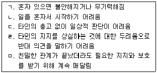
- ㄱ, ㄹ
- ㄴ, ㄷ, ㄹ
- ㄱ, ㄴ, ㄷ, ㄹ
- ㄱ, ㄴ, ㄷ, ㅁ
- ㄱ, ㄴ, ㄷ, ㄹ, ㅁ
(정답률: 알수없음)
98. DSM-5의 특징으로 옳지 않은 것은?
- 다축체계를 폐지하였다.
- 달리 분류되지 않는(NOS) 범주를 새롭게 도입하였다.
- 일차적으로 범주적 평가에 기초한다.
- 문화적 차이를 고려한다.
- 범주적 평가와 더불어 차원적 평가를 사용하였다.
(정답률: 20%)
99. 다음 증상들이 공통적으로 나타나는 영역으로 옳은 것은?
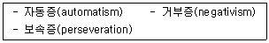
- 지각
- 감각
- 정동
- 행동
- 사고
(정답률: 40%)
100. 다음 사례에 적절한 진단명은?
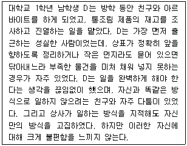
- 강박성 성격장애
- 편집성 성격장애
- 지속성 우울장애
- 범불안장애
- 적응장애
(정답률: 84%)
- "ㄴ, ㄹ"은 옳다. 청소년 내담자는 대체로 자아성찰이 부족하고, 감정조절이 어렵기 때문에, 상담자가 대화를 이끌어가는 것이 중요하다. 이를 위해서는 상담자가 청소년의 이야기를 경청하고, 공감하는 능력이 필요하다. 또한, 청소년 내담자는 대체로 부정적인 감정을 많이 느끼기 때문에, 상담자는 이를 인정하고, 긍정적인 감정을 유도하는 것이 중요하다.
- "ㄱ, ㄷ, ㄹ"은 옳지 않다. 청소년 내담자는 대체로 자아성찰이 부족하고, 감정조절이 어렵기 때문에, 상담자가 대화를 이끌어가는 것이 중요하다. 이를 위해서는 상담자가 적극적으로 대화를 이끌어나가야 하므로, 상담자의 대화기술이 중요하다. 또한, 청소년 내담자는 대체로 부정적인 감정을 많이 느끼기 때문에, 상담자는 이를 인정하고, 긍정적인 감정을 유도하는 것이 중요하다. 이러한 점들을 고려하면, "ㄴ, ㄷ, ㄹ"이 옳은 선택지이다.
- "ㄴ, ㄷ, ㄹ"이 옳은 이유는 위와 같이 설명할 수 있다.
- "ㄱ, ㄴ, ㄷ, ㄹ"은 옳지 않다. 청소년 내담자의 특성을 모두 고려하는 것이 중요하지만, 이 중에서도 가장 중요한 것은 상담자의 대화기술과 감정적인 지원이다. 따라서, "ㄱ, ㄴ, ㄷ, ㄹ" 중에서도 "ㄴ, ㄷ, ㄹ"이 가장 적절한 선택지이다.